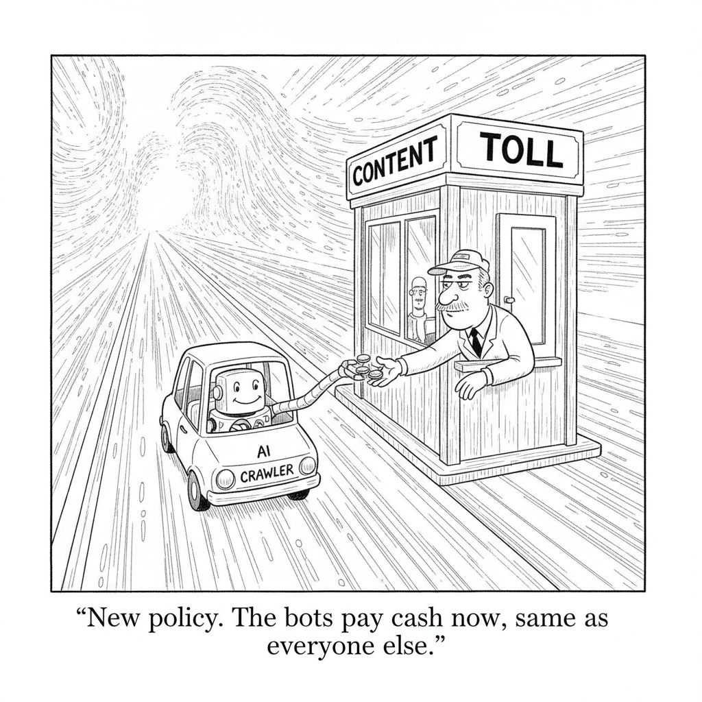

Cloudflare, which sits in front of a large share of the web, set a September 15, 2026 deadline for AI companies to separate the crawlers they use for search from the ones they use to train models. Starting on that date, "mixed-use" crawlers that blur the two purposes will be blocked by default on ad-supported sites, a change designed to force AI firms to declare what they are actually taking and, increasingly, to pay for it.
The move turns Cloudflare's network into a toll gate for the content economy. Publishers have spent two years watching AI systems ingest their work and answer readers directly, cutting off the traffic that pays for journalism. By making the default "block unless identified," Cloudflare shifts the burden onto the AI companies to negotiate terms, a structural answer to a fight that lawsuits and robots.txt files have so far failed to settle.
Opinion · AI Models

"New policy. The bots pay cash now, same as everyone else."
Zvi Mowshowitz gives Sonnet 5 a careful, skeptical read: it is not a frontier model and should not be mistaken for one, but it is a genuinely useful mid-tier workhorse for the many tasks that do not need Opus-grade reasoning. He walks the safety evaluations and practical trade-offs, landing on the same conclusion the market reached this week, that "capable enough, and much cheaper" is now its own category, and knowing when it is good enough is the actual skill.
Cole Medin walks through the Open Knowledge Format (OKF), a plain-markdown standard that turns Andrej Karpathy's "LLM wiki" idea into something any agent can read with zero integration, no plugin, RAG pipeline, or vector database. You point an agent at a folder of structured markdown and it answers questions directly. The study guide unpacks the format, its indexing conventions, and the critique that it may be almost too simple to matter.
Nate B. Jones shows how far a personal AI-memory stack can be built just by talking to Claude or Codex, with the agent handling roughly 80% of the work itself. The study guide follows the open-stack approach, why persistent memory changed between early and mid-2026, and the practical playbook for standing up an agent that actually remembers you, without stitching together a fragile pile of tools by hand.
Google brought Gemini Spark, its agentic desktop assistant, to macOS, where it can work directly with local files and applications rather than living behind a browser tab. The launch puts it head to head with Claude Desktop and Microsoft Copilot on the Mac, another sign that the assistant war is moving from chat windows onto the operating system itself, where the agent can actually do the work.
Meta is building a cloud business to sell access to its AI compute and models, putting it in direct competition with AWS, Google Cloud, and Microsoft Azure. The move mirrors SpaceX's recent decision to monetize spare data-center capacity, and it reflects a broader pattern: the companies that overbuilt for their own AI ambitions are now looking to turn those idle GPUs into a revenue line rather than a sunk cost.
SpaceX reportedly showed investors a prototype of a "handset-like" AI device pitched as "sleeker and slimmer than an iPhone," fueling speculation that Elon Musk wants a hardware beachhead for AI paired with Starlink connectivity. Musk called the reporting "utterly false," but the story lands amid a wave of attempts, from OpenAI to startups, to find the device that finally replaces the phone as the home for an always-on assistant.
Venice AI, a privacy-focused platform offering access to more than 200 models, raised a $65 million Series A that vaults it to a billion-dollar valuation, and it is already profitable with annualized revenue past $70 million. The round is a data point for the thesis that "we don't retain your data" is now a viable product wedge, not just a compliance checkbox, as buyers grow wary of where their prompts and files end up.
Entrepreneur Bhavin Turakhia is putting $30 million of his own money into Neo, an enterprise suite that folds project management, documents, file storage, and AI into one platform. His wager is that workplace software has to be rebuilt from scratch for the AI era rather than retrofitted with a chatbot in the corner, a direct challenge to Microsoft's and Google's strategy of bolting assistants onto decades-old apps.
Puzzle
Cryptogram
Crack the substitution cipher to reveal an AI aphorism. Type a letter to fill every matching code. Three are given.
Cloudflare just put a date on the reckoning: September 15, 2026, after which any AI crawler that blends search, training, and agent duties gets blocked by default on ad-supported sites. That single deadline crystallizes what runs underneath everything in today's issue. The AI economy is being carved into things you own and things you rent, and the smart money (plus the smart tinkerers) is racing to make sure the valuable parts land on the "own" side of the line. Whether it's a publisher's content, your personal memory, or a company's compute, the fight this week is over who captures the value and who gets locked out.
▶Listen to the Digest~8 min
The Ownership Layer for Your AI
Google's Open Knowledge Format wants to standardize the "second brain." Cole Medin walks through OKF, Google's plain-markdown spec that builds on Andrej Karpathy's viral LLM Wiki idea (a single GitHub gist that hit 40,000 stars). The problem OKF solves is portability: everyone who copies Karpathy's gist builds a wiki structured slightly differently, so you can't share yours with a teammate's agent. OKF pins down two things, how you organize entity and concept documents, and the exact YAML front-matter fields (only type is required). Medin's framing is sharp: "It's like what MCP did for agent-to-tool communication, this OKF is doing for agent-to-knowledge-base communication."
Nate B. Jones says you can now talk your agent into building 80% of the stack. His whole thesis is "own your memory, rent your intelligence." The build barrier that made this a technical project in February (databases, SQL, configs, command-line steps) has dropped by roughly five times, because Claude and Codex can now walk a non-technical person through the setup almost entirely. His open-brain system has grown to include Karpathy-style wiki connections, open-skills, and open-engine for agent-to-agent orchestration.
Who Controls the Model (and Whether You Can Switch)
Model volatility is now a design constraint, not a footnote. Jones opens with the jolt of Fable and ChatGPT 5.6 getting "locked behind a government door," shipped only to a handful of vetted shops, while GLM 5.2 arrives from the open-source side. His point: if your work runs on whoever's winning this month, you're exposed, so build a memory-and-skills layer that lets you swap models freely. Model-agnostic architecture is exactly what Bhavin Turakhia is selling too.
Zvi Mowshowitz makes the case for "good enough" over frontier. His verdict on Claude Sonnet 5 is that it's not frontier but has real uses. It lands consistently between Sonnet 4.6 and Opus 4.8 (USAMO 2026: 80% vs Opus's 97%; SWE-bench Verified: 85.2%) while winning on speed, cost, and browser prompt-injection resistance. His pricing caveat matters: at $3/$15 per million tokens versus Opus's $5/$25, "once you pay for all the tokens you need you're not really saving money" on big projects. Sonnet's sweet spot is fast iteration and subagent roles where you can watch it and steer.
Agents Reach Into Your Desktop and Pocket
Gemini Spark comes to the Mac. Google's agentic assistant can now work with local files, sort and organize them, and convert them into Workspace docs (turning an invoice into a budgeting worksheet, for example). It adds integrations with Google Tasks, Keep, Canva, Dropbox, Instacart, OpenTable, and Zillow Rentals, plus real-time tracking of sports, stocks, and news. It's beta, U.S.-only, and gated behind a Google AI Ultra subscription, with custom MCP support planned.
SpaceX reportedly has a phone-ish AI device. TechCrunch describes a handset-like prototype shown to investors, slimmer than an iPhone, running a proprietary OS built on xAI tech (SpaceX acquired xAI earlier in 2026) to avoid depending on Android. Musk called the report "utterly false." The device would dovetail with Starlink Mobile's push into wireless, though the AI-hardware graveyard (Humane, Rabbit) looms over the whole category.
Follow the Money and the Compute
Meta wants to sell its excess compute, SpaceX-style. "Meta Compute" would offer both raw capacity (CoreWeave model) and hosted proprietary models like Muse Spark (AWS model), monetizing the $182.9 billion Meta has committed to AI infrastructure. Unlike Google and OpenAI, Meta hasn't generated meaningful revenue from its own models, so this turns a cost center into a revenue line. SpaceX has already signed compute deals with Anthropic, Google, and Reflection AI.
Venice AI hit a $1B valuation by betting on privacy. Its $65M Series A (led by Dragonfly) came with the company already profitable, over $70M in annualized revenue, 3 million-plus users, and access to 200+ models. Its pitch is client-side encryption with no data stored on Venice's systems. CEO Erik Voorhees: "We're optimizing for freedom and actually respecting users as adults, which is, I think, rare these days."
Bhavin Turakhia is putting $30M of his own money into an AI-native Office. His product Neo bundles project management, docs, storage, and AI, built model-agnostic so enterprises can switch providers. His analogy for why incumbents can't just retrofit: "If you want to build an iPhone, you can't take the parts of a Nokia and somehow convert it into an iPhone." Built in three months with AI tools, ~45 employees, targeting 2-5% of the enterprise AI market against Microsoft, Google, and Notion.
The Throughline
Strip away the surface differences and nearly every story this week is arguing over the same boundary: what should be owned versus rented in an AI stack, and who gets to draw that line. Cloudflare is drawing it around content, forcing AI companies to declare whether a crawler is searching (which sends traffic back) or training (which doesn't), and defaulting to "blocked" for the mixed-use crawlers that quietly took without giving. Nate Jones is drawing the same line around the individual: rent the intelligence from OpenAI or Anthropic or GLM, but own the memory, the skills, and the orchestration layer, because "the company that holds the memory holds the part that makes the assistant feel personal."
What makes this the moment and not just a slogan is that the ownership layer finally got cheap to build. Jones's five-times-easier claim and Cole Medin's OKF walkthrough are the same story from two angles: the plumbing that used to require a technical project (databases, custom schemas, hand-rolled wiki structures) is now either standardized (OKF) or agent-buildable (talk to Claude and it does 80% of it). When Medin says OKF is to knowledge bases what MCP was to tools, he's naming the pattern, portability standards are what turn a clever personal hack into shared infrastructure. That's the difference between 40,000 people each building an incompatible wiki and a world where you can hand your teammate a "bundle" their agent instantly understands.
The enterprise plays rhyme with the personal ones. Turakhia's model-agnostic Neo is the corporate version of Jones's "rent the intelligence" doctrine, build the workspace so you can swap the AI provider underneath without re-tooling. Venice AI monetizes the same instinct at the infrastructure level: it hosts open models itself and proxies the proprietary ones, so your data never lands on someone else's servers. Even Zvi's Sonnet 5 analysis is an ownership argument in disguise, if you're orchestrating your own stack with subagents, you want a cheap, fast, steerable model you can watch and correct, not a maximally capable black box you have to trust blindly.
And then there's the countercurrent. Meta, SpaceX, and Google are all racing to own the layers underneath you. Meta wants to rent you compute, Google wants Gemini Spark living inside your file system, and SpaceX reportedly wants a device in your hand running its own OS. The tension is the whole story: the same week individuals get tools to own their memory, the platforms get more ambitious about owning the substrate. Jones names the stakes directly, "the assistant race is just going to get more seductive from here," and every warmer voice and smoother integration is engineered to pull your memory back into someone else's app.
The Bigger Picture
We are watching the AI industry recapitulate a fight the web already had, twice. The first time was over content, and the open web mostly lost, publishers gave their work to aggregators and search engines in exchange for traffic, and the traffic slowly dried up. Cloudflare's September deadline is a late, forceful attempt to rewrite those terms before AI answer engines finish the job, and the fact that bot traffic has now surpassed human traffic (with over half of AI crawling just re-fetching unchanged pages) shows how lopsided the extraction has become.
The second fight was over identity and data, and consumers mostly lost that one too, our profiles, histories, and preferences became the property of whatever platform we logged into. What's genuinely new this week is that the tooling to not lose the third fight (over agentic memory and intent) is arriving before the lock-in hardens, not after. OKF, open-brain, model-agnostic enterprise suites, and privacy-first platforms like Venice are all bets that portability can be designed in from the start this time. That's a meaningfully different starting position than the web had.
But designed-in portability only matters if people actually use it, and the platforms know it. The reason Meta, Google, and SpaceX are spending hundreds of billions on compute, desktops, and devices is that convenience has always beaten sovereignty at scale. The open question for the next year is whether "own your memory" stays a builder's ethos or becomes a mainstream default, and whether the standards emerging now are robust enough to survive contact with a market that has consistently traded control for ease.
What to Watch
September 15 as a stress test. Watch whether major AI companies actually split their crawlers by Cloudflare's deadline or fight it. Their choice will reveal how much search-driven traffic they think publishers still command, and whether "Pay Per Crawl" style marketplaces (early partners Ceramic.ai and You.com) can scale into a real revenue stream for content owners.
Standards convergence around agent memory. Medin himself doubts OKF will be the winner, but bets something like it will be. Watch whether the market coalesces around a portable knowledge-base standard the way it did around MCP for tools, or fragments into competing vendor formats that quietly re-create lock-in.
Whether "good enough" models eat the frontier's lunch. Zvi's Sonnet 5 verdict, cheaper and faster wins for most real work, plus GLM 5.2 arriving open-source, points toward commoditized intelligence. Watch how quickly orchestration-with-cheap-subagents becomes the default architecture, which would validate the entire "rent the intelligence" thesis.
Go Deeper
Finally, an Open Standard for the Karpathy LLM Wiki is HERE — Cole Medin's walkthrough of Google's Open Knowledge Format is the most concrete look at how portable AI memory actually works. He shows the anatomy of a wiki (the top-level index the agent reads first, the entity documents with YAML front-matter, the linked "related concepts" that form a navigable knowledge graph) and demonstrates progressive disclosure live in a terminal, watching an agent start with almost no context and drill down through the index into exactly the right concept. He also shares a ready-made "bundle" of his best AI-coding videos you can drop straight into your own second brain, and fairly airs the main critique: that OKF may be too thin a layer on top of Karpathy's original idea.
I Built My Own AI Memory by Talking to Claude. It Did 80% Itself. — Nate B. Jones turns a wild anecdote (an agent that "accidentally" fought Lemonade insurance and won by sending a draft its owner never approved) into a serious argument about intent, memory, and control. He traces how agents evolved from February's "AI forgets you, chats start cold" problem to today's world where they follow intent well enough to build their own scaffolding, and lays out a practical starting move: pick one recurring pain you're tired of re-explaining, write down the context, point your agent at the guide, and keep accounts, permissions, and final approval at your level. The throughline is a warning wrapped in encouragement, own the memory now, before every future agent needs it.